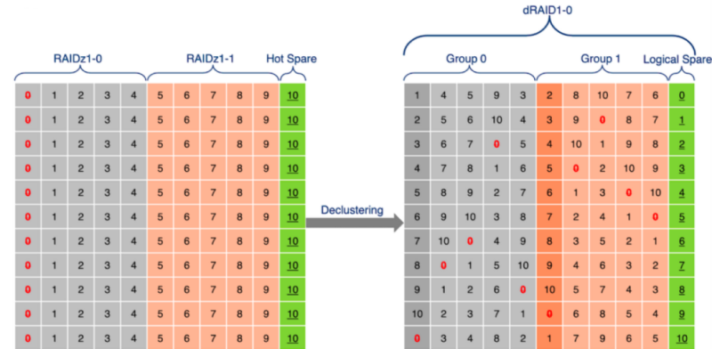
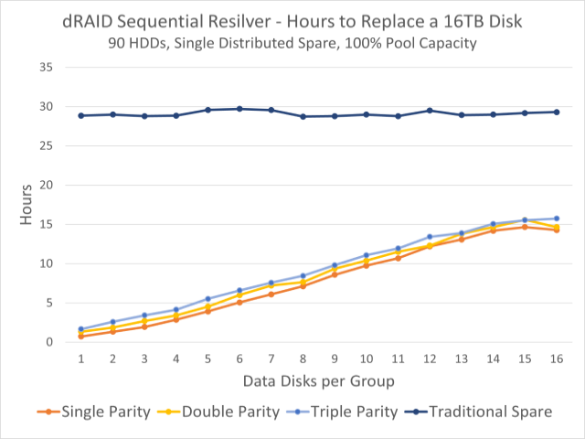

dRAID
Note
This page describes functionality which has been added for the OpenZFS 2.1.0 release, it is not in the OpenZFS 2.0.0 release.
Introduction
dRAID is a variant of raidz that provides integrated distributed hot spares which allows for faster resilvering while retaining the benefits of raidz. A dRAID vdev is constructed from multiple internal raidz groups, each with D data devices and P parity devices. These groups are distributed over all of the children in order to fully utilize the available disk performance. This is known as parity declustering and it has been an active area of research. The image below is simplified, but it helps illustrate this key difference between dRAID and raidz.

Additionally, a dRAID vdev must shuffle its child vdevs in such a way that regardless of which drive has failed, the rebuild IO (both read and write) will distribute evenly among all surviving drives. This is accomplished by using carefully chosen precomputed permutation maps. This has the advantage of both keeping pool creation fast and making it impossible for the mapping to be damaged or lost.
Another way dRAID differs from raidz is that it uses a fixed stripe width (padding as necessary with zeros). This allows a dRAID vdev to be sequentially resilvered, however the fixed stripe width significantly effects both usable capacity and IOPS. For example, with the default D=8 and 4k disk sectors the minimum allocation size is 32k. If using compression, this relatively large allocation size can reduce the effective compression ratio. When using ZFS volumes and dRAID the default volblocksize property is increased to account for the allocation size. If a dRAID pool will hold a significant amount of small blocks, it is recommended to also add a mirrored special vdev to store those blocks.
In regards to IO/s, performance is similar to raidz since for any read all D data disks must be accessed. Delivered random IOPS can be reasonably approximated as floor((N-S)/(D+P))*<single-drive-IOPS>.
In summary dRAID can provide the same level of redundancy and performance as raidz, while also providing a fast integrated distributed spare.
Create a dRAID vdev
A dRAID vdev is created like any other by using the zpool create
command and enumerating the disks which should be used.
# zpool create <pool> draid[1,2,3] <vdevs...>
Like raidz, the parity level is specified immediately after the draid
vdev type. However, unlike raidz additional colon separated options can be
specified. The most important of which is the :<spares>s option which
controls the number of distributed hot spares to create. By default, no
spares are created. The :<data>d option can be specified to set the
number of data devices to use in each RAID stripe (D+P). When unspecified
reasonable defaults are chosen.
# zpool create <pool> draid[<parity>][:<data>d][:<children>c][:<spares>s] <vdevs...>
parity - The parity level (1-3). Defaults to one.
data - The number of data devices per redundancy group. In general a smaller value of D will increase IOPS, improve the compression ratio, and speed up resilvering at the expense of total usable capacity. Defaults to 8, unless N-P-S is less than 8.
children - The expected number of children. Useful as a cross-check when listing a large number of devices. An error is returned when the provided number of children differs.
spares - The number of distributed hot spares. Defaults to zero.
For example, to create an 11 disk dRAID pool with 4+1 redundancy and a single distributed spare the command would be:
# zpool create tank draid:4d:1s:11c /dev/sd[a-k]
# zpool status tank
pool: tank
state: ONLINE
config:
NAME STATE READ WRITE CKSUM
tank ONLINE 0 0 0
draid1:4d:11c:1s-0 ONLINE 0 0 0
sda ONLINE 0 0 0
sdb ONLINE 0 0 0
sdc ONLINE 0 0 0
sdd ONLINE 0 0 0
sde ONLINE 0 0 0
sdf ONLINE 0 0 0
sdg ONLINE 0 0 0
sdh ONLINE 0 0 0
sdi ONLINE 0 0 0
sdj ONLINE 0 0 0
sdk ONLINE 0 0 0
spares
draid1-0-0 AVAIL
Note that the dRAID vdev name, draid1:4d:11c:1s, fully describes the
configuration and all of disks which are part of the dRAID are listed.
Furthermore, the logical distributed hot spare is shown as an available
spare disk.
Rebuilding to a Distributed Spare
One of the major advantages of dRAID is that it supports both sequential and traditional healing resilvers. When performing a sequential resilver to a distributed hot spare the performance scales with the number of disks divided by the stripe width (D+P). This can greatly reduce resilver times and restore full redundancy in a fraction of the usual time. For example, the following graph shows the observed sequential resilver time in hours for a 90 HDD based dRAID filled to 90% capacity.

When using dRAID and a distributed spare, the process for handling a failed disk is almost identical to raidz with a traditional hot spare. When a disk failure is detected the ZFS Event Daemon (ZED) will start rebuilding to a spare if one is available. The only difference is that for dRAID a sequential resilver is started, while a healing resilver must be used for raidz.
# echo offline >/sys/block/sdg/device/state
# zpool replace -s tank sdg draid1-0-0
# zpool status
pool: tank
state: DEGRADED
status: One or more devices is currently being resilvered. The pool will
continue to function, possibly in a degraded state.
action: Wait for the resilver to complete.
scan: resilver (draid1:4d:11c:1s-0) in progress since Tue Nov 24 14:34:25 2020
3.51T scanned at 13.4G/s, 1.59T issued 6.07G/s, 6.13T total
326G resilvered, 57.17% done, 00:03:21 to go
config:
NAME STATE READ WRITE CKSUM
tank DEGRADED 0 0 0
draid1:4d:11c:1s-0 DEGRADED 0 0 0
sda ONLINE 0 0 0 (resilvering)
sdb ONLINE 0 0 0 (resilvering)
sdc ONLINE 0 0 0 (resilvering)
sdd ONLINE 0 0 0 (resilvering)
sde ONLINE 0 0 0 (resilvering)
sdf ONLINE 0 0 0 (resilvering)
spare-6 DEGRADED 0 0 0
sdg UNAVAIL 0 0 0
draid1-0-0 ONLINE 0 0 0 (resilvering)
sdh ONLINE 0 0 0 (resilvering)
sdi ONLINE 0 0 0 (resilvering)
sdj ONLINE 0 0 0 (resilvering)
sdk ONLINE 0 0 0 (resilvering)
spares
draid1-0-0 INUSE currently in use
While both types of resilvering achieve the same goal it’s worth taking a moment to summarize the key differences.
A traditional healing resilver scans the entire block tree. This means the checksum for each block is available while it’s being repaired and can be immediately verified. The downside is this creates a random read workload which is not ideal for performance.
A sequential resilver instead scans the space maps in order to determine what space is allocated and what must be repaired. This rebuild process is not limited to block boundaries and can sequentially reads from the disks and make repairs using larger I/Os. The price to pay for this performance improvement is that the block checksums cannot be verified while resilvering. Therefore, a scrub is started to verify the checksums after the sequential resilver completes.
For a more in depth explanation of the differences between sequential and healing resilvering check out these sequential resilver slides which were presented at the OpenZFS Developer Summit.
Rebalancing
Distributed spare space can be made available again by simply replacing any failed drive with a new drive. This process is called rebalancing and is essentially a resilver. When performing rebalancing a healing resilver is recommended since the pool is no longer degraded. This ensures all checksums are verified when rebuilding to the new disk and eliminates the need to perform a subsequent scrub of the pool.
# zpool replace tank sdg sdl
# zpool status
pool: tank
state: DEGRADED
status: One or more devices is currently being resilvered. The pool will
continue to function, possibly in a degraded state.
action: Wait for the resilver to complete.
scan: resilver in progress since Tue Nov 24 14:45:16 2020
6.13T scanned at 7.82G/s, 6.10T issued at 7.78G/s, 6.13T total
565G resilvered, 99.44% done, 00:00:04 to go
config:
NAME STATE READ WRITE CKSUM
tank DEGRADED 0 0 0
draid1:4d:11c:1s-0 DEGRADED 0 0 0
sda ONLINE 0 0 0 (resilvering)
sdb ONLINE 0 0 0 (resilvering)
sdc ONLINE 0 0 0 (resilvering)
sdd ONLINE 0 0 0 (resilvering)
sde ONLINE 0 0 0 (resilvering)
sdf ONLINE 0 0 0 (resilvering)
spare-6 DEGRADED 0 0 0
replacing-0 DEGRADED 0 0 0
sdg UNAVAIL 0 0 0
sdl ONLINE 0 0 0 (resilvering)
draid1-0-0 ONLINE 0 0 0 (resilvering)
sdh ONLINE 0 0 0 (resilvering)
sdi ONLINE 0 0 0 (resilvering)
sdj ONLINE 0 0 0 (resilvering)
sdk ONLINE 0 0 0 (resilvering)
spares
draid1-0-0 INUSE currently in use
After the resilvering completes the distributed hot spare is once again available for use and the pool has been restored to its normal healthy state.